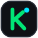
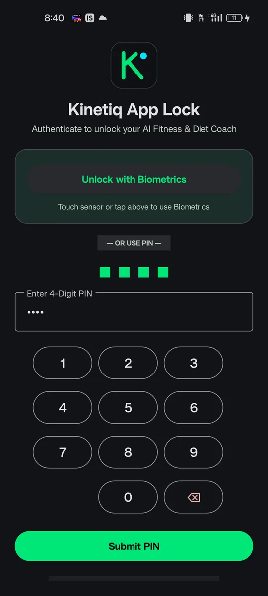
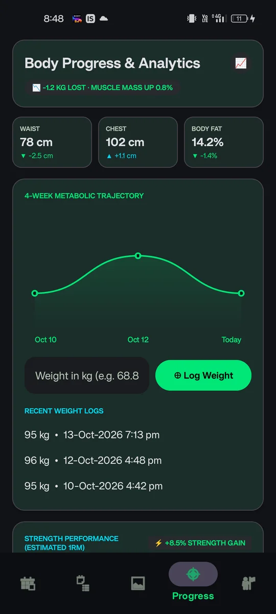
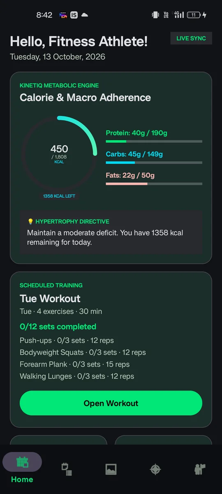
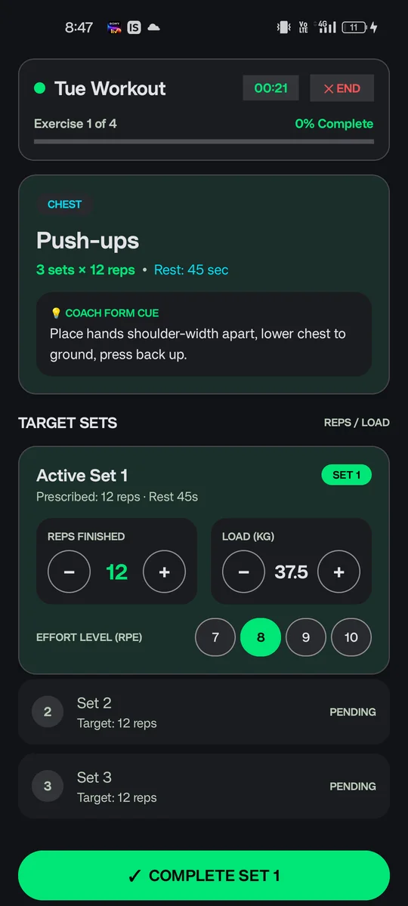
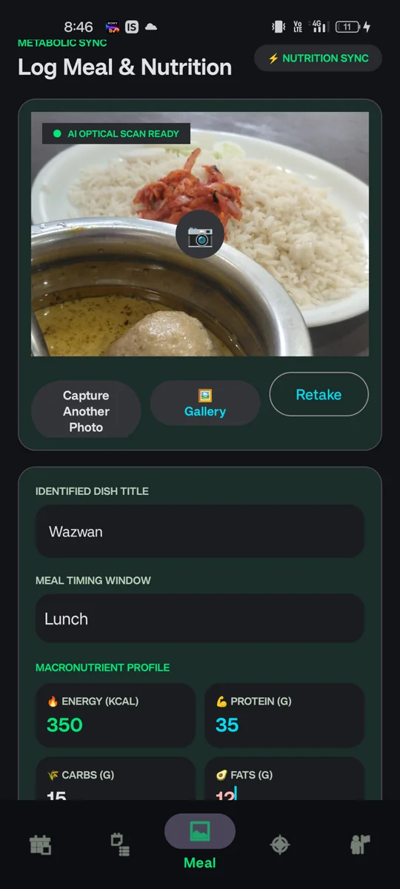
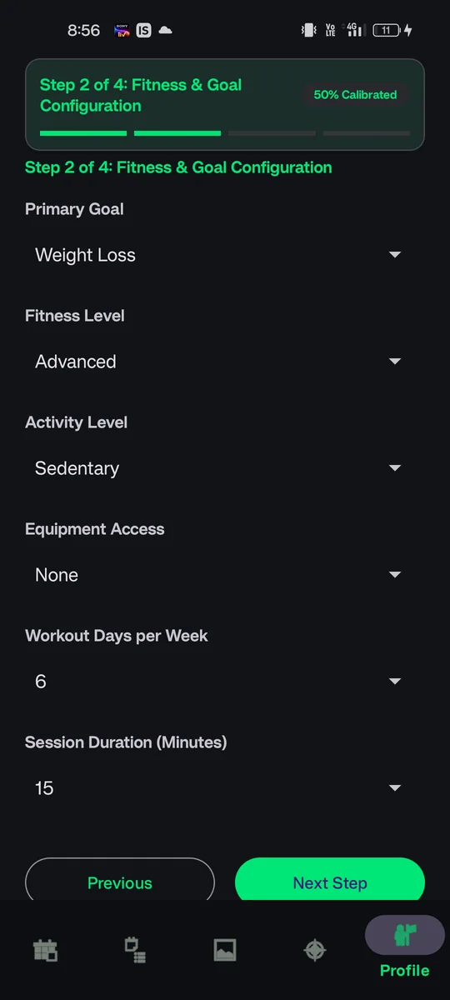
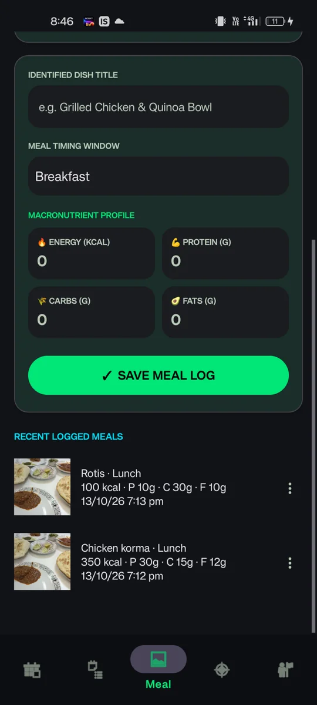
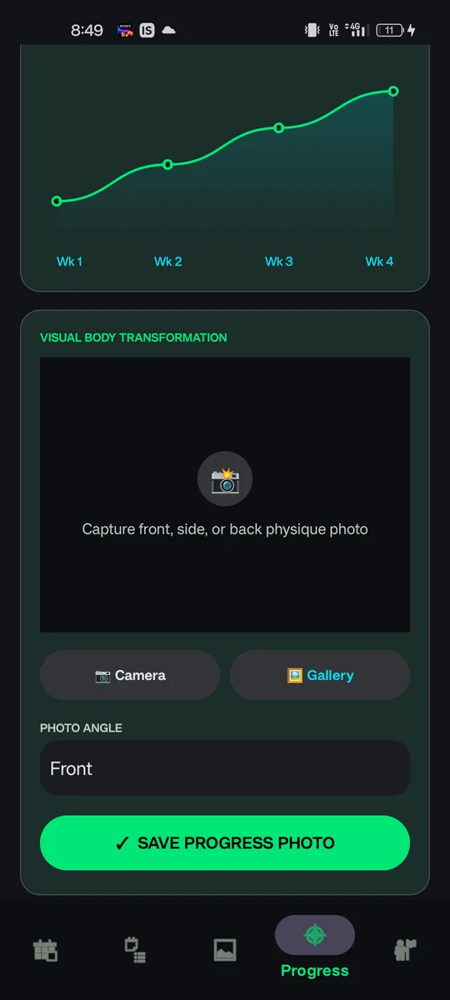

Targets worked out from you
A four-step setup collects your age, height, weight, goal, fitness level, activity level, equipment and available time. Kinetiq then calculates your BMR, TDEE, daily calorie goal and a protein, fat and carbohydrate split.

KinetiqKinetiq turns your height, weight and goal into calorie and macro targets, guides each workout set by set, and logs meals from a photo.
Android app · installed from an APK, not the Play Store





Kinetiq is an AI-powered fitness and diet coaching app. It builds personalised workout and nutrition plans from your biometrics and goals, then tracks how the week actually goes.
Every feature below is taken from the app itself.
A four-step setup collects your age, height, weight, goal, fitness level, activity level, equipment and available time. Kinetiq then calculates your BMR, TDEE, daily calorie goal and a protein, fat and carbohydrate split.
A calorie ring and protein, carb and fat bars show how today is going, with calories remaining and an AI-written directive. Below it sit your logging streak, meal breakdown and today’s scheduled training.
Work through each exercise with a coach form cue, a rest timer with +30s and Skip, and inputs for reps and load. Rate every set with an effort level from 7 to 10.
Take or choose a photo and the AI optical scan suggests the dish. Check the meal timing, edit calories, protein, carbs and fats, then save it. Recent meals stay in a list for quick review.
Track waist, chest and body fat, log your weight, and follow a four-week trend and estimated 1RM strength. Add progress photos with an angle tag and keep them in a saved gallery.
Get a five-day push, pull and legs plan, start a new week or repeat the plan, add custom exercises, and export a weekly PDF report of sessions, planned work and logged sets.
Kinetiq App Lock opens with your fingerprint or face, with a four-digit PIN keypad as the fallback.
Drag the phone to turn it. Pick a screen, then tap the pulsing dots to see what each part does.
Enter your metrics, goal, fitness level and equipment. Kinetiq calculates your calorie target and macro split.

Open today’s workout, follow the form cue, and log reps, load and effort for each set.
Photograph your plate, confirm the dish and macros, and save the meal to your day.

Check the trend in your measurements and strength, add a progress photo, and export your weekly PDF.

This is an independent APK download. It is not installed from the Google Play Store, so Android will ask for permission first.
You only need to allow installs from this source for your browser or file manager. You can turn that permission off again after installing.
Kinetiq is an AI-powered fitness and diet coaching app. It builds workout and nutrition plans from your biometrics and goals and tracks your training, meals and body progress in one place.
Kinetiq is an Android app. The minimum Android version hasn’t been published yet.
Download the file, open it, allow your browser or Files app to install unknown apps if Android asks, then tap Install. The steps are in the download section above.
Download the newest APK from this page and open it to install over the existing app. Android only accepts the update when it is signed with the same key as the version you already have.
Check that the file finished downloading, that you allowed installs from your browser or Files app, that you have free storage, and that your Android version meets the minimum. If it still fails, download the file again. Avoid uninstalling an existing copy first unless you’re happy to lose its data.
The app asks for location and camera permission, along with biometric unlock. Meal logs and progress photos can be saved with a location and timestamp. Check the privacy policy for how that data is handled (a link will appear here once one is published).